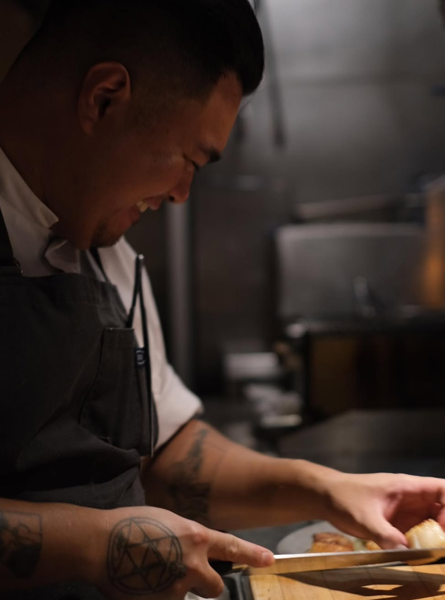

About

Theodore grew up in Wahiawa, Hawaii. They had a childhood filled with family trips to the Philippines, where they connected with relatives and learned about their cultural roots. These experiences taught Theodore the importance of family and heritage.
Theodore’s love for cooking started unexpectedly at a movie theater. This theater didn’t just show movies—it served full meals, which sparked their curiosity about food. With encouragement from friends who were becoming chefs, Theodore discovered their own passion for cooking. They went on to graduate from culinary school, where they realized how much they loved cooking.
Today, Theodore dreams of opening a gastropub—a cozy spot serving Filipino-inspired skewers and drinks. Although it’s an ambitious goal, it keeps Theodore motivated to grow as a chef and entrepreneur.
Outside of cooking, Theodore enjoys both active and relaxing hobbies. They play golf, join airsoft games, or watch movies and play video games. But cooking is always their main passion. They love experimenting with recipes and seeing others enjoy their food.
Theodore’s biggest inspiration is their father, who worked hard to support their family. From him, Theodore learned the values of hard work, perseverance, and caring for others. When asked how they’d like to be seen, Theodore hopes people think of them as funny, hard-working, and genuine. Looking ahead, they see a future where their love for food and community comes together in their dream gastropub.